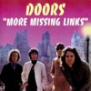

MATRIX (CD)
Archivio ARC CD 027, Italy 1995 |
| 1.People are Strange/ 2.Alabama Song/
3.Crystal Ship/ 4.Twentieth Century Fox/
5.Moonlight Drive 6.Summer's Almost Gone/
7.Unhappy Girl/ 8.Back Door Man/ 9.My Eyes Have
Seen You/ 10.Soul Kitchen/ 11.Get Off My Life/
12.Crawling King Snake/ 13.I Can't See Your Face
In My Mind |
| Sources: Matrix Club, San Francisco,
March 7th, 1967, first and second set. A copy of
Crawling King Snakes (Back Trax CD 04-88004), but
digitally remastered and in better soundquality. |
| Soundquality: |
 |
| Rarity Of Material: |
|
| Visual Attractiveness: |
|
This 1995 CD has got a nice cover showing a couple of
Morrison photos taken by Joel Brodsky, one picture of the
band during their ICA Gallery interview in London, and
one taken by Michelle Campbell of Jim's grave (previously
published in Dylan Jones' horrible Dark Star
book). What else? Oh yes, the songs: Another Matrix
release. We all have those songs already!
THE MATRIX TAPES (2 CD Box)
The Swingin' Pig Records TSP-CD-047-2, Luxembourg
1990 |
Disc One: 1.My Eyes Have
Seen You/ 2.Soul Kitchen/ 3.I Can't See Your Face
In My Mind/ 4.People Are Strange/ 5.When The
Music's Over/ 6.Money/ 7.Who Do You Love/
8.Moonlight Drive/ 9.Summer's Almost Gone/ 10.I'm
A King Bee/ 11.Gloria/ 12.Break On Through/
13.Summertime
Disc Two: 1.Back Door Man/
2.Alabama Song/ 3.Light My Fire/ 4.The End/ 5.Get
Off My Life/ 6.Close To You/ 7.Crawling King
Snake/ 8.The Crystal Ship/ 9.Twentieth Century
Fox/ 10.Unhappy Girl/ 11.Rock Me Baby |
| Sources: Disc One - Matrix Club, San
Francisco, March 10th, 1967 Disc Two - 1-4=Matrix
Club, San Francisco, March 10th, 1967;
5-11=Matrix Club, San Francisco, March 7th, 1967 |
| Soundquality: |
|
|
|
|
|
 |
| Rarity Of Material: |
|
|
|
|
|
| Visual Attractiveness: |
|
|
|
|
|
Another release of the Matrix concerts, but this time in
better quality than the first bootleg LP version Moonlight
Drive - The Scream Of The Butterfly. The Swingin'
Pigs used the new "Nonoise" computer based
digital noise reduction system. This drastically reduces
all unwanted noises on older recordings but cuts off the
high frequencies. It's true: no surface noise, and the
soundquality is a lot better than on all other Matrix
bootlegs, with the exception of the 4 CD Box The
Complete Matrix Club Tapes (Kiss The Stone KTS BX
009), which I prefer to the Swingin' Pig release because
of better quality and a couple of extra songs. This - in
fact - is a big minus for The Matrix Tapes: each
song is just once on them, which means songs they played
twice during different sets were omitted. There were two
pressings of this box - the first came in a double CD
box, the second got released in a slim box carrying a
white tray. The second pressing was sold as a cheap
mid-price box and got widely distributed.
MISSING LINKS (CD)
Memorial Records, Memorec 403, Europe (Germany?)
1994 |
| 1.Whiskey, Mystics And Men #1/ 2.The Soft
Parade Intro #1/ 3.The Soft Parade Intro #2/
4.Whiskey, Mystics And Men #2/ 5.Love Me Tender/
6.Rock Is Dead #1/ 7.Me And The Devil Blues/
8.Rock Is Dead #2/ 9.Queen Of The Magazines/
10.Pipeline (instrumental)/ 11.Rock Is Dead #3/
12.Rock Me Baby/ 13.Mystery Train/ 14.Rock Is
Dead #4 |
| Sources: 1=Elektra Recorders Studios,
Los Angeles. Unpublished final studio version,
which never got on the album The Soft Parade,
date unknown, probably early 1969; 2-3=Elektra
Recorders Studios, Los Angeles. Studio Session
for the album The Soft Parade, date unknown,
probably early 1969; 4-14=Elektra Recorders
Studio, Los Angeles, February 25th, 1969. Studio
Session for The Soft Parade. |
| Soundquality: |
|
|
|
|
|
 |
| Rarity Of Material: |
|
|
|
|
|
| Visual Attractiveness: |
|
|
|
|
|
This CD is a MUST for everyone who is interested in The
Doors. I really do not know how I could live without a
recording of this session, which I consider as the very
missing link between Waiting For The Sun, The Soft
Parade and Morrison Hotel. You know there was
the bootleg LP Rock Is Dead (Tangie Town Records)
and there was the bootleg Orange County Suite
(Document Records DR 019), which were absolutely
fantastic at the time of their release, but now there is Missing
Links. Unfortunately the soundquality is not as good
as the latter ones, but Missing Links contains the
COMPLETE Rock Is Dead session, and one will
be wondering how perfectly Paul Rothchild cut the session
down to what became the well-known Rock Is Dead
(and Orange County Suite) bootleg, and how all the
cut-outs sound like. He even put parts of the session
together, which were not intended being put together (but
they fit!). If you own one of the previous bootlegs, it's
like a puzzle finding out what was cut out. A very new
experience, even for me. Finally released after about two
years of waiting for it I still get a thrill listening to
Queen Of The Magazines (I still don't know who
wrote the song; it sounds a bit like Love In Vain
by Robert Johnson, to which Jim Morrison improvises some
of his own lyrics; to tell you the truth: I got tears in
my eyes when I first heard it a couple of years ago and
it is still very very touching me). Robert Johnson's Me
And The Devil Blues (with some spontaneous Morrison
improvisations) still is a perfect moody blues song.
Jim's rap about his parents at the beginning of the
session gets a totally new meaning compared to what was
published on previous bootlegs. I wonder why the
bootlegger didn't cut out the short break in (what he
called) Rock Is Dead #2 (if you put this disc on
tape for your car stereo try to cut the break off, it's
easy!). There is another break in Rock Me Baby,
which would have been easy to cut off the disc, but
-unfortunately- it's on your CD as well. On the Missing
Links version I have the disc index stops after track
10, so my CD player doesn't count track 11-14, but you
shouldn't worry: It seems the bootlegger just forgot to
put a disc memory on the following tracks, so track 10
really is track 10-14. On the first preview tape I got of
this session (which never came out on bootleg) there were
no breaks at all, and there was some additional poetry,
but no Whiskey, Mystics And Men #1. I enjoy the
liner notes for this CD, they even mention what Jim told
Jerry Hopkins during the well known interview for Rolling
Stone about this session: "We needed another
song for The Soft Parade. We were racking our brains
trying to think what song. We were in the studio and so
we started throwing out all those old songs. Blues trips.
Rock Classics. Finally we just started playing and we
played for about an hour, and we went through the whole
history of rock music - starting with blues, going
through rock and roll, surf music, latin, the whole
thing. I call it `Rock Is Dead'. I doubt if anybody'll
ever hear it." Jim was wrong. Rock Is Dead was
one of the hottest bootlegs in town (once a discjockey
from L.A. told his audience), but now there is Missing
Links, even hotter. Well written linernotes, by the
way. One of the hottest bootleg CDs in town ever!
Absolutely recommended.
MISSING LINKS (CD)
Memorial Records, Memorec 403, Czech 1996 |
| 1.Whiskey, Mystics And Men #1/ 2.The Soft
Parade Intro #1/ 3.The Soft Parade Intro #2/
4.Whiskey, Mystics And Men #2/ 5.Love Me Tender/
6.Rock Is Dead #1/ 7.Me And The Devil Blues/
8.Rock Is Dead #2/ 9.Queen Of The Magazines/
10.Pipeline (instrumental)/ 11.Rock Is Dead #3/
12.Rock Me Baby/ 13.Mystery Train/ 14.Rock Is
Dead #4/ 15.Someday Soon/ 16.Wintertime Love/
17.Roadhouse Blues (vocals only, not complete) |
| Sources: 1=Elektra Recorders Studios,
Los Angeles. Unpublished final studio version,
which never got on the album The Soft Parade,
date unknown, probably early 1969; 2-3=Elektra
Recorders Studios, West Hollywood. Studio Session
for the album The Soft Parade, date unknown,
probably early 1969; 4-14=Elektra Recorders
Studio, West Hollywood, February 25th, 1969.
Studio Session for The Soft Parade. 15= Center
Coliseum, Seattle, June 5th, 1970; 16=original
one-vocal-track version from digitally remastered
Elektra CD Waiting For the Sun (9 74024-2);
17=Elektra Recorders Studios, West Hollywood,
early 1969. |
| Soundquality: |
|
|
|
|
|
|
| Rarity Of Material: |
to |
|
|
|
|
| Visual Attractiveness: |
|
|
|
|
|
This CD is a remake of the 1994 Missing Links CD
and it looks exactly the same but has got 3 bonus tracks
which are not mentioned on the cover or on the CD (track
15-17). To distinguish both versions check the CD: this
new version has got the OSA sign while the 1994 version
without bonus tracks has got GEMA on the CD. The
soundquality is exactly the same. For review, please
check The Doors Quarterly #30.
MISSING TAPES (CD)
Live Storm LSCD 51594, Italy 1994 |
| 1.Whiskey, Mystics And Men #1/ 2.The Soft
Parade Intro #1/ 3.The Soft Parade Intro #2/
4.Whiskey, Mystics And Men #2/ 5.Love Me Tender/
6.Rock Is Dead #1/ 7.Me And The Devil Blues/
8.Rock Is Dead #2/ 9.Queen Of The Magazines/
10.Pipeline (instrumental)/ 11.Rock Is Dead #3/
12.Rock Me Baby/ 13.Mystery Train/ 14.Rock Is
Dead #4 |
| Sources: 1= Unpublished final studio
version, which never got on the album The Soft
Parade, date unknown, probably early 1969; 2-3=
Studio Session for the album The Soft Parade,
date unknown, probably early 1969; 4-14= Studio
Session for The Soft Parade, February 25th, 1969.
A copy of Missing Links, Memorial Records
(Memorec 403). |
| Soundquality: |
|
|
|
|
|
|
| Rarity Of Material: |
|
|
|
|
|
| Visual Attractiveness: |
|
|
|
|
|
Needless to say, that everybody who owns a copy of Missing
Links does not need this Italian disc. The sound is
worse, and the Italians even copied the liner notes from Missing
Links (they just erased the words Missing Links
and also the name of the guy who wrote the notes, some Philippe
Auguste). So this is a copy of a bootleg. Nice New
York '68 photo of Jim on the cover, though.
MOONLIGHT DRIVE (CD)
Oil Well RSC CD 115, Italy 1995 |
| 1.Twentieth Century Fox/ 2.Moonlight
Drive/ 3.Summer's Almost Gone/ 4.Unhappy Girl/
5.Me And The Devil Blues-Sittin' Here
Thinkin'-Rock Me Baby (cover says Woman)/ 6.Break
On Through/ 7.Light My Fire/ 8.The End |
| Sources: Complete recording of set
three plus a part of set two at the Matrix Club,
San Francisco, March 7th, 1967. A copy of disc #2
(KTS 3014) of The Complete Matrix Club Tapes (KTS
BX 009). |
| Soundquality: |
|
| Rarity Of Material: |
|
| Visual Attractiveness: |
|
If you own the box The Complete Matrix Club Tapes
(KTS BX 009) you should be aware that this mid-price CD
is a copy of disc #2 from the box. Fine cover, fine
quality. Limited to 200 copies only.
MORE MISSING LINKS (CD)
On The Air OTA-002, Japan 1995 |
| 1.Soul Train/ 2.Geraldine/ 3.Henrietta/
4.Just For You/ 5.Big Bucket "T"/
6.Rampage/ 7.Wintertime Love/ 8.We Could Be So
Good Together/ 9.The Unknown Soldier/ 10.Love Me
Two Times/ 11.Light My Fire/ 12.Who Do You Love
(not complete)/ 13.Someday Soon (not complete)/
14.Who Scared You/ 15.You Need Meat (Don't Go No
Further)/ 16.Treetrunk/ 17.The End/ 18.Yes, The
River Knows (cover says The River Flows)/
19.Gloria/ 20.Do It (cover says Let It Bleed)/
21.unidentified track, definitely no Doors (not
complete). |
Sources: 1-6=Rick And The Ravens
7" singles; 1+2=Aura Records 4511, 1965;
3+4=Aura Records 4506, 1965; 5+6=Posae Records
101, 1965; 7=from digitally remastered US-CD
Waiting for The Sun; 8+9=from US 7" single
Elektra EK-45628; 10=from a Demo Acetate; 11=from
US 7" single Spun Gold Elektra-45051;
12.Pacific National Exhibition Coliseum,
Vancouver, Canada, June 6th, 1970 (cover says
this was from Matrix 10.3.1967, which is not
true); 13.Center Coliseum, Seattle, June 5th,
1970 (cover says this was a studio track from The
Soft Parade sessions, which is not true); 14=flip
side of US 7" single Elektra EK-45656;
15=flip side of US 7" single Elektra
EKS-45726; 16.flip side of US single Elektra
EKS-45793 (1972, no Morrison track); 17=from
Apocalypse Now soundtrack; 18=from official album
Waiting For The Sun; 19=from official album Alive
She Cried, later on In Concert; 20=from official
album The Soft Parade; 21=the hell knows what
this is!
Tracks 1-13+16 copied from the vinyl bootleg
Someday Soon (Do It Records 004), also the
informations about those tracks; 20 copied from
CD bootleg Go Insane (Aulica A 112.10.2); all
others from official sources. |
| Soundquality: |
to |
|
|
|
|
 |
| Rarity Of Material: |
to |
|
|
|
|
| Visual Attractiveness: |
|
|
|
|
|
Most of the songs on this CD were taken from the bootleg
LP Someday Soon (Do It Records) released in 1989
in Germany, which was a great album at the time. When I
got More Missing Links I first thought this CD was
made by a Doors fan, but then the track Let It Bleed
told me it wasn't. No Doors fan would call Do It
from the album The Soft Parade "Let It
Bleed". When the hell does this nonsense stop?
Some tracks on More Missing Links are rare, such
as the acetate and the Rick And The Ravens singles, but
those songs will be in better quality (not that many
crackles!) on the Italian box Stages. So this CD,
which was definitely not made by the people who did the
original Missing Links (Memorial Records Memorec
403), is nothing but a mediocre compilation and not worth
the money. The disc was made in Japan and - astonishingly
- got distributed from Holland.
MORRISON (CD)
Never End M.I.A. Act*6, Italy 1992 |
| 1.Do It (cover says Let It Bleed)/ 2.I'm A
King Bee/ 3.Insane (cover says Go Insane)/
4.Gloria/ 5.Summertime (cover says No Limits No
Laws)/ 6.Someday Soon (cover says Sunday Soon)/
7.Money/ 8.Moonlight Drive/ 9.Hello I Love You/
10.Summer's Almost Gone/ 11.My Eyes Have Seen
You/ 12. End Of The Night |
| Sources: 1=original LP version;
2=Matrix Club, San Francisco, March 10th, 1967;
3=Demo Acetate, World Pacific Studios, Los
Angeles, September 2nd, 1965; 4=original version
from Alive She Cried LP; 5=same as 2; 6=Center
Coliseum, Seattle, June 5th, 1970;
7=Konserthuset, Stockholm, Sweden, September
20th, 1968, first show; 8-12=same as 3. All
tracks taken from the previously published
bootleg double set Go Insane (Aulica, Italy,
A112.10.1 and A112.10.2). Compared to this, the
soundquality is worse on Morrison. This CD is
also known as Missing In Action Act*6, which is a
kind of headline for a whole series of compact
discs. |
| Soundquality: |
to |
| Rarity Of Material: |
|
| Visual Attractiveness: |
|
The CD looks like a star on Hollywood Boulevard, and
it is gold plated. Hmmm. Although it was the first gold
plated Doors bootleg CD, all the material on it had been
heard before in much better quality, and the people from Missing
In Action are as silly as the Aulica guys. Songs are
mislabelled, songs are cut drastically, fade-ins,
fade-outs, as usual. Definitely not an essential bootleg,
not at all. Tasteful design, though. The booklet shows an
unpublished colour photo from the Roundhouse, London,
1968. But the whole thing is no must for any collector.
MR. MOJO RISIN' AGAIN THE
LIVE PERFORMANCE '93 AND MORE (CD)
Montana MO 10015, Germany, 1993 |
| 1.Roadhouse Blues/ 2.Break On Through/
3.Light My Fire/ 4.Five To One/ 5.Little Red
Rooster/ 6.Who Do You Love/ 7.Go Insane/ 8.The
Hill Dwellers/ 9.People Are Strange/ 10.Love
Street/ 11.Love Me Two Times/ 12.The Soft Parade/
13.Summer's Almost Gone/ 14.Manish Boy |
| Sources: 1-3= Rock'n'Roll Hall Of Fame
Awards, Century Plaza Hotel, Los Angeles, January
12th, 1993 (with Eddie Vedder on vocals); 4=
Center Coliseum, Seattle, June 5th, 1970; 5-6=
Pacific National Exhibition Coliseum, Vancouver,
Canada, June 6th, 1970; 7-8= Konserthuset,
Stockholm, September 20th, 1968, second show; 9=
Matrix Club, San Francisco, March 7th, 1967;
10-11= same as 7+8; 12= Critique Show, PBS TV,
WNET, New York, May 13th, 1969; 13= same as 9;
14= Winterland, San Francisco, December 26th,
1967. |
| Soundquality: |
to |
|
|
|
|
|
| Rarity Of Material: |
|
|
|
|
|
| Visual Attractiveness: |
|
|
|
|
|
The cover of this CD doesn't give you any dates or
venues, so this list is pretty useful. It doesn't even
mention Eddie Vedder's name as the singer for the Doors
at their Hall Of Fame concert. The quality is OK, the '93
stuff even is in stereo, and forget the rest of it, which
has been published many times before. There are a few
Doors bootlegs featuring this special performance, but I
prefer one of the countless Pearl Jam boots like Eddie
Sings The Doors and all this crap. This CD was one of
the first presented in a clear box (the tray was made of
clear plastic), really fashionable. At least that was
something new. Short comment on the performance: the
group sounds like a second-hand tribute band.
MYSTERY TRAIN (CD)
Oil Well RSC CD 097, Italy 1995 |
| 1.Who Do You love/ 2.Someday Soon/ 3.Peace
Frog/ 4.Alabama Song-Back Door Man- Five To One/
5.Light My Fire-Fever-Summertime-St.James
Infirma- ry-Light My Fire (cover says Light My
Fire #1-Fever-Light My Fire #2)/ 6.Build Me A
Woman/ 7.When The Music's Over |
| Sources: 1=Pacific National Exhibition
Coliseum, Vancouver, June 6th, 1970; 2=Center
Coliseum, Seattle, June 5th, 1970; 3-4=Felt
Forum, New York, January 18th, 1970, late show;
5=same as 1; 6=same as 3-4; 7=same as 1. A copy
of Collectors Items (IBR 2395), which was also
disc two in the double CD set The Last Farewell
(Vivid Sound Productions VSP 51001/2). |
| Soundquality: |
to |
| Rarity Of Material: |
|
| Visual Attractiveness: |
|
No wonder the great compilation The Last Farewell
would be copied soon. As this is another Oil Well
mid-price CD, limited to 200 copies only, you might well
lay your hands on it if you don't own the original.
MYSTIC MAN (CD)
On The Air OTA 005, Japan 1995 |
| 1.Whiskey, Mystics And Men #1/ 2.The Soft
Parade Intro #1/ 3.The Soft Parade Intro #2/
4.Whiskey, Mystics And Men #2/ 5.Love Me Tender/
6.Rock Is Dead #1/ 7.Me And The Devil Blues/
8.Rock Is Dead #2/ 9.Queen Of The Magazines/
10.Pipeline/ 11.Rock Is Dead #3/ 12.Rock Me Baby/
13.Mystery Train/ 14.Rock Is Dead #4/ 15.Someday
Soon/ 16.Orange County Suite (short version) |
| Sources: 1=Elektra Recorders Studios,
Los Angeles, unpublished final studio version,
which never got on the album The Soft Parade,
date unknown, probably early 1969; 2-3=Elektra
Recorders Studios, Los Angeles. Studio Session
for the album The Soft Parade, date unknown,
probably early 1969; 4-14=Elektra Recorders
Studios, Los Angeles, February 25th, 1969. Studio
Session for The Soft Parade; 15=Center Coliseum,
Seattle, June 5th, 1970; 16=Poetry session,
Elektra Recorders, Los Angeles, March 1969 (Jim
Morrison only). |
| Soundquality: |
|
|
|
|
|
|
| Rarity Of Recording: |
|
|
|
|
|
| Visual Attractiveness: |
|
|
|
|
|
This Japanese disc (distributed from Holland) was copied
from Missing Links (Memorial Records, Memorec
403), but this time featuring bonus tracks which
everybody already knows. If you own Missing Links,
you certainly do not need this one.
|